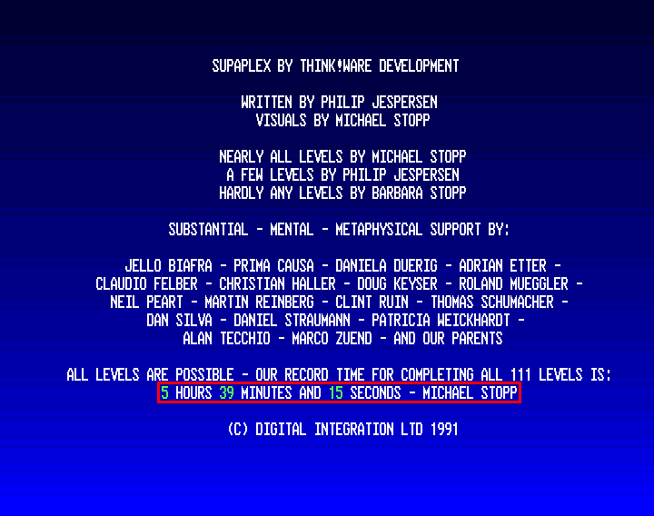

update: 2022-09-16 by wojtek at bitologia.org (index)
Original Supaplex for Amiga 500 is not an easy game. When playing for the first time one must learn both, the behaviour of the moving objects and the special configuration that solves a particular level. Steering Murphy with a joystick also needs a practice and is a bit exhaustive process for this device. Joy must be chosen properly, as its own dynamics might sometimes lead to very unwanted effects like accidental movements or misdirections in the most inappropriate moments. Additional random events in form of the bugs (which is actually a feature!) do not help either. Shortly, in comparison with Boulder Dash, Supaplex is a bit slower, however it implements much better physics.
Michael Stopp claims, he can complete the game within 5 hours, 39 minutes, and 15 seconds. :o

Well... that is approximately 183 seconds on average per level. It is not impossible, but quite a challenging task. Of course, nobody can do this in one turn – minimal total time can be achieved only when each level is treated separately and eventually all statistics are summed up. Below there is my attempt to break the record which is
5 hours, 37 minutes, and 56 seconds
and still can be improved! Even though I had access to a genuine Amiga 500, the condition of its FDD and the joy, prevented me from being even close to the best time. So, all numbers below were achieved playing the DOS version of the game which is much easier and which allows one to cheat a little, especially when fighting with snik-snaks and electrons! Even in the face of all these facilitations, it has not been possible to establish such result without putting a significant effort. See details below.
LEGEND for solver:
uldr = up left down rightuldr means the multiplicity of direction, eg. 9u = uuuuuuuuuULDR = peek up, peek left...P = portal (spool)x| = move direction x as long as possibleE = exitFor example, a semi-optimal solver for the first level reads:
2u8rRu7rdrD6ru3rD7l3dD3ld5lU3ld11l2u2l3u2ld|3l4u2lDu3l5dRl2u4lUlu3lUlUd2lDu|lE.
| level | T [m.s] | Σ T [hour] | remark |
|---|
█